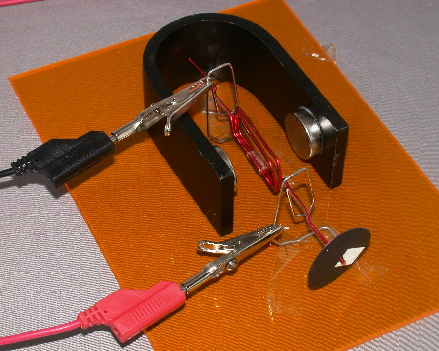

Electric Motor Design
|
Design Principles
Design is a creative process. You have to use your knowledge to devise a good solution to the problem - in this case, a good motor. This design problem has many solutions, just like most practical design problems. There may several equally-good solutions. This is not a question where there is just one "right answer", and every other solution is wrong. This page deals with some of the questions that you might have, and tries to guide you towards a design that might work. The picture below shows one example of a motor design - there are many others! This example did not run particularly fast...  What size and shape should the coil be?
The shape of the coil is not important - only the area of the coil in the magnetic field affects the torque produced. The magnet assembly uses two round magnets, of 22 mm diameter, and the magnetic field is fairly concentrated in the space between them. Any coil area outside this space will not contribute much to the torque, so there is no point in making the coil too large. You may find it convenient to wind the coil around one of the wooden blocks (there are three ways you can do this) or around the plastic tube (two possible ways), to get a neat coil of a suitable size. You can use small pieces of adhesive tape to hold the coil together (not too much - you need to keep the mass low!). Your coil will need an axle or shaft, so that it can be supported and allowed to turn. If you intend to use the ends of the wire to make the axle, you need to plan for this at the start. Your coil should be symmetrical about its axle, or as close as possible to this, so that it is well balanced. If one side of the coil has more mass than the other, gravity will provide another torque, which may make it harder for your motor to get started. To improve this, you could add some mass to the lighter side of the coil, or move the axle slightly towards the heavier side... How many turns of wire should be in the coil?
More turns of wire will provide more torque, or turning force, for a given current. Torque is needed to overcome the friction in the bearings that support the coil, for example. The voltage generated as your coil rotates in the magnetic field also depends on the number of turns. At a given speed, more turns will produce a higher voltage. This voltage opposes the voltage from the DC supply, and acts to reduce the current flowing in the coil, as described on the theory page. Looking at this the other way, for a given supply voltage, adding more turns to the coil will make it rotate more slowly. More turns of wire will increase the resistance of your coil. This will tend to reduce the current flowing, and therefore the torque produced. This effect will be greater if you use thin wire, but it is likely to be far less significant than the opposing voltage above. More turns of wire will increase the mass of your coil. This will usually also increase the friction in the bearings. In summary, you need enough turns of wire to get the torque needed to overcome the friction in your motor, but after that, more turns will make it run more slowly! Which size of wire should we use?
A smaller wire diameter will give a lighter coil, or allow more turns for the same coil mass. However, it will also give a higher coil resistance. A larger wire diameter will make the coil heavier, and would be more suitable with a relatively small number of turns. The thicker wire is also stiffer, and will make the coil more rigid. It can even be used as the axle of your motor. How to support the coil, and still allow it to turn?
How to make electrical connections to the rotating coil?
If you have used metal supports and a metal axle for your coil, you may be able to use these metal-to-metal contacts to carry current to and from the coil. The current must flow around all the turns of the coil before returning to the DC supply, so this method will not work if the metal axle just runs straight through the centre of the coil. Alternative solutions will need extra metal-to-metal contacts between the wire that forms the coil and some stationary metal parts attached to the baseboard. Remember that the copper wire is covered in an insulating material, and you must remove this insulation carefully, using sandpaper, in the places where you need access to the copper underneath (see below first). How to make a commutator?
Ideally, the commutator should reverse the direction of the current twice per rotation, so that the coil always experiences a torque in the same direction. However, for a simple motor without too much friction, it is possible to use a commutator that just switches the current on and off at the appropriate points, so that the coil never experiences a torque in the "wrong" direction. It will only generate torque for half of each rotation, but the momentum of the coil should carry it through the other half. This requires an intermittent contact, which only allows current to flow in the coil for half of each rotation - think carefully about which half! If you have used the insulated copper wire to form the axle for your coil, you could arrange an intermittent contact with it by only removing the insulation over half of its circumference. Thus as the coil rotates, the current will be switched on and off at just the right times (if you remove the insulation in the right place!). |